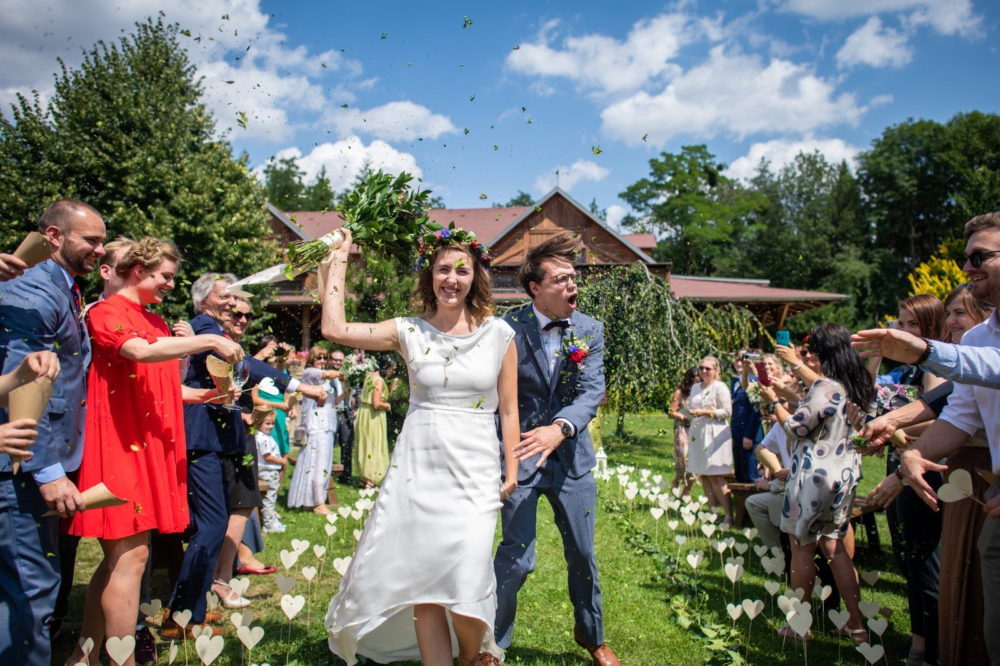

Svatby

Vím, jak držet prostor – pro to, co se potřebuje stát.
A vím, kdy ho nechat explodovat.
Svatba pro mě není jen program.
Je to živý rituál mezi krásou a nespoutaností.
Okamžik, kdy se něco skutečně stane.
Lidi mi často říkají, že se se mnou přestávají hlídat.
Dovolí si být svobodnější. Sami sebou. Živí.
Nejčastější obava:
že to bude nuda. Nebo křeč.
Nebude.
A nebude to ani chaos. Se mnou ne.
Nepouštím „jen" hudbu.
Čtu místnost.
Držím směr.
A nechávám věci dít se ve chvíli, kdy mají.
Na schůzce se ladím na Váš příběh. Na strukturu hostů.
Hledáme, čemu udělat prostor.
Co chcete sdílet?
Kde je Vaše vášeň?
Vymýšlíme drobnosti. Hry. Pičovinky.
Recyklujeme nápady.
Ladíme den tak, aby měl spád i lehkost.
A pak přichází to hlavní:
momenty, které nejdou naplánovat.
Nevyrábím zážitky.
Vytvářím prostor, ve kterém vznikají.
Stopuji extázi.
Okamžiky, kdy to přestane být „jen svatba".
Návrat do hravosti.
Do těla. Do přítomnosti.
DJ je funkce.
Ve skutečnosti jsem průvodce tím, co se ten den opravdu děje.
Chcete svatbu, která je skutečně Vaše?
Hravou. Intenzivní. Uvolněnou.
Chcete něco skutečného?
Ozvěte se.